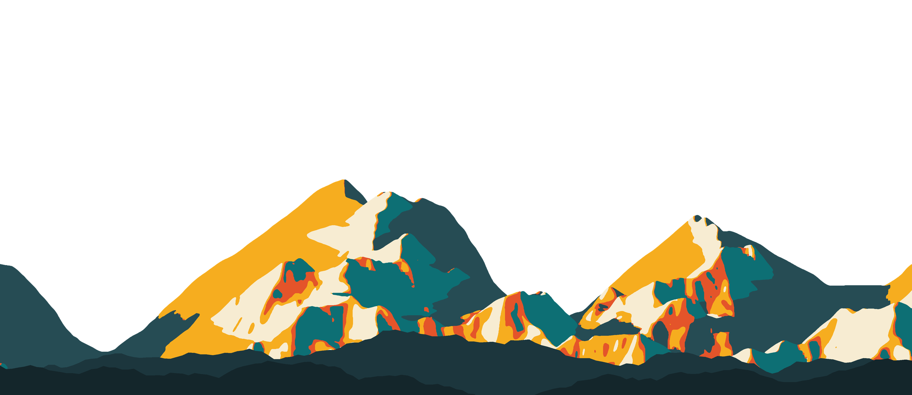

El cuadro de la naturaleza de una ruta
Lo que vive junto a tu camino
Suelta un GPX. WikiNatu cruza tu ruta con las observaciones de iNaturalist y dibuja su relieve, sus especies a su altura y una guía para llevar.
La ruta de ejemplo, paso a paso
Lagos de Tristaina
5,04 kmLagos de Tristaina
+228 mde desnivel
189especies
719observaciones